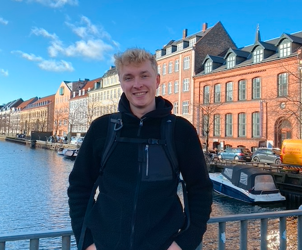

Je suis passionné d'informatique et plus particulièrement de cybersécurité,
désireux de découvrir de nouvelles choses que ce soit à des fins professionnelles ou pour ma vie personnelle,
et je suis un voyageur et un rêveur.

Mon année de diplomation ! Je suis allé en Suède pour un programme d'échange à l'Université de Halmstad! Ensuite j'ai fait un stage de 10 semaines
chez KPMG Belgium et j'ai écris ma thèse de maîtrise sur la sécurité IoT.
De nombreux projets ont été réalisés au cours de cette année, où j'ai appris de nouvelles technologies telles que Docker et
Ansible. Je me suis également amélioré en cryptographie, en analyse des risques et en programmation Python.

Mon année de diplomation ! Cette année, j'ai appris le Cloud Computing sur Microsoft Azure et j'ai obtenu
la certification Microsoft AZ900, j'ai amélioré mes compétences en matière de monitoring, d'ingénierie système, de gestion et de conception d'architecture IT.
J'ai également effectué un stage de 15 semaines chez
Faymonville où j'ai travaillé sur les technologies Fortinet et Microsoft Azure.
Durant cette deuxième année, j'ai tout appris sur les réseaux et comment les sécuriser, les systèmes
sous Linux et Windows, l'analyse des risques Ebios RM2018, les bases des tests d'intrusion, le monitoring, l'éthique et
les lois, l'entrepreneuriat et les conceptions d'architectures IT.

Durant cette première année, j'ai beaucoup appris sur les bases de données SQL, comment programmer en Python et
HTML/CSS/PHP, analyser des projets, qu'est-ce que les architectures informatiques, l'éthique et le droit, mathématiques et communication.